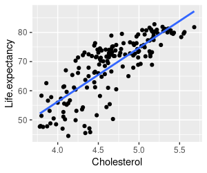

So far we have focused on understanding how the General Linear Model can be used to reproduce the results of an ANOVA, various t-tests, or simple linear regression. In addition to this versatility, the GLM can be easily extended to more than a single predictor variable. When we have more than one numeric predictor that we use to explain variation in the response variable we are conducting a multiple regression.
Multiple regression is not a completely new topic to us because we used multiple regression to learn how categorical variables are used in a GLM. If you recall, we converted a single column made up of cyanobacteria densities into a set of 0/1 dummy-coded numeric variables, which were then entered into a multiple regression analysis. From this we obtained a single intercept and slope coefficients for each dummy coded variable. The intercept was interpreted as the mean for the baseline group (i.e. the density coded as 0 across all the dummy variables), and the slopes were the difference between the baseline density and the density represented by the dummy-coded predictor (i.e. the density whose name matched the column name, and thus that received a 1 for the column).
Although that application of multiple regression is a clever way to obtain ANOVA results in a GLM, it is not usually what we mean by multiple regression. Usually multiple regression refers to a model with two or more numeric predictors that are used to explain a single response variable. Each predictor gets its own line in the ANOVA table, and will receive a partial slope coefficient that measures the relationship between the response and the predictor after controlling for the effect of the other predictors in the model.
One of the important features of a typical multiple regression analysis is that the predictors will be correlated to some degree. Understanding how the correlation between the predictors affects the results is an important part of using multiple regression successfully.
Today we will explore cases in which 1) including a second predictor increases our ability to detect the effect of the first, 2) use of two highly correlated predictors makes it impossible to attribute responses uniquely to either one, and 3) use of multiple predictors reveals an apparent relationship to be spurious.
Exercise
Start a new project for today's exercise in R Studio (call the folder "multreg"), and download this R markdown file for your commands. We will use data from gapminder.org for this exercise. The Gapminder project is a collection of data about various aspects of health, demography, and economic development of the countries of the world. It is not particularly biological, apologies, but it is interesting, and we will focus on a few things (like life expectancy, birth rate, and various public health measures) that have some link to biology.
The data set we will use today is here. Download and import the file into a data frame called "gapminder" in the import.gapminder chunk of your R markdown file.
If you open the gapminder data set to view it you'll see the variables included in the data set are:
- Country - the country the data pertains to. Country would only be used as a label, but is not a predictor or response variable.
- Life.expectancy - the average lifespan expected at birth. Infant
mortality is included in this measure. Life expectancy
will be the response variable for all of our analyses.
The remaining variables will be used as predictors.
- logPop.Density - log of population density, which is the natural log of the number of people per unit area, at the level of the entire country (that is, population size divided by the area of the country).
- logGDP - log of per-capita gross domestic product. This is economic output (GDP) divided by population size, then log transformed.
- Cholesterol - total cholesterol (mmol/L) in blood of men.
Standardized for differences in age distribution.
- TB - existing cases of all forms of tuberculosis per 100,000 people in the population.
- Maternal.mortality - maternal deaths per live birth, multiplied by 100,000 (so, number of women who die in childbirth per 100,000 live births).
- Babies.per.woman - children per woman in the population, including women who do not have children.
- Birth.rate - crude birth rate, which is births per 1000 people in
the population.
Variables that are described as "Log of ..." are natural logs of each measurement. To use regression we need the relationship between life expectancy and each of the predictors to be linear, and log transformation can change a curvilinear relationship into a linear one. We'll learn more about transformations when we talk about assumptions of GLM later this semester, but for now just bear in mind that natural logs are exponents of the base e (which is a constant equal to approximately 2.718). So, for example, the minimum logGDP of 4.539 is actually e4.539 = $93.60 per person per year, and the maximum of 10.940 is e10.940 = $56,387 dollars per person per year - the differential doesn't look so big on a log scale, because 10.940 is only 2.4 times bigger than 4.539, but this translates into a maximum GDP that is 602 times bigger than the minimum GDP of $93.60.
For multiple regression we need to have a single row for each observation, and a column for each variable - this is the multivariate data arrangement, used when we have multiple variables measured on the same subjects.
Multiple regression requires complete data, meaning that there are no missing values. In a multiple regression if there is a single missing value in any of the variables used for the analysis the data point must be dropped from the analysis - if you look through this version of the data set you'll see that there are no rows with missing data, but there were a couple of countries I omitted because they did not have complete data.
We will use these data to explore what multiple regression can be used for, and how correlations between predictor variables affects the analysis and interpretation.
Case 1: Improving detection of the effects of one predictor by including another predictor
Even in a well controlled lab experiment a single predictor will generally not account for all of the variation in the response variable. Some of the variation in response is truly random, and thus not explainable - this random, unexplainable variation is the noise that goes into the residual term, and makes it difficult for us to detect the relationship we are trying to detect. However, some of the seemingly random variation in response may actually be explainable if we account for the variables that cause it. If we account for variation we can take it out of the residual term, which makes it easier for us to detect the effects we're interested in. Including a predictor to account for a nuisance variable (i.e. one that affects our experiment, but is not interesting scientifically) is called statistical elimination.
Our first gapminder example explores the relationship between population density and life expectancy. To begin, we should graph the relationships.
1. Make a graph of Life.expectancy (y axis) against logPop.Density (x axis) using ggplot. Add points, and add the regression line (using geom_smooth(method = "lm", se = F) to get the regression line without standard error bands). Put your ggplot() function in the graph.life.exp.against.logPop.Density chunk of your R markdown file.
Your graph will look like the one on the left. You'll see that the regression line is suggesting a positive relationship, but it's not very convincing - there is a great deal of scatter around the line, presumably because of all the other things that cause variation in life expectancy other than the density of the population in a country.
But, the line indicates there may be a positive relationship, so we
should see if it's statistically significant.
2. Run a linear model of Life.expectancy (response) on logPop.Density (predictor), and assign it to an object called life.logpop.lm - put this in the code chunk called life.logpop.simple.linear.regression of your R markdown file.
In the same code chunk, use the summary() command to get the regression coefficient and p-value for life.logpop.lm - you will see output that looks like this:
Call:
lm(formula = Life.expectancy ~ logPop.Density, data = gapminder)
Residuals:
Min 1Q
Median 3Q Max
-22.786 -7.227 2.835 7.456 18.436
Coefficients:
Estimate Std. Error t value Pr(>|t|)
(Intercept) 61.4903
2.4365 25.237 < 2e-16 ***
logPop.Density 1.6739
0.5744 2.914 0.00408 **
---
Signif. codes: 0 ‘***’ 0.001 ‘**’ 0.01 ‘*’ 0.05 ‘.’ 0.1 ‘ ’ 1
Residual standard error: 10.12 on 160 degrees of freedom
Multiple R-squared: 0.05041,
Adjusted R-squared: 0.04447
F-statistic: 8.493 on 1 and 160 DF, p-value: 0.004075
The coefficient for logPop.Density is 1.67 (highlighted in yellow), indicating that life expectancy increases by 1.67 years with each unit of increasing log population density (since this is on a natural log scale each 1 unit of increase is an e1 = 2.72 -fold increase in population density, so this coefficient is telling us that 1.67 years of life expectancy are being added every time the population density gets 2.72 times larger).
The summary() output also gives you results of the omnibus test of the model - this is reported below the coefficients, starting with "Residual standard error:". The omnibus test p-value is in blue here to help you find it. With just one numeric predictor the omnibus test matches the coefficient test for the slope. You can see from the omnibus p-value that the regression is significant, but we also need to know how strong the relationship is - our measure of the percentage of variation in Life.expectancy explained by the model is the Multiple R-squared, in red text here (there is only one predictor, so this is not really a multiple R2 yet, but R doesn't change the labeling when you only have one variable). You'll see that although the model is statistically significant, the explained variation is tiny - only 5% of the variation in life expectancy is explained by logPop.Density - thus, the linear relationship is not likely to be due to random chance, but it is not very strong, either.
Before you go on you should also get the ANOVA table for this analysis, using the anova() command on your fitted model object (in the same code chunk, below summary()). The table looks like this:
Response: Life.expectancy
Df Sum Sq Mean Sq F value Pr(>F)
logPop.Density 1 869.7 869.71 8.4933
0.004075 **
Residuals 160 16383.8 102.40
Again, with just one predictor this table just reproduces the omnibus test we got in the summary() output, so this test of logPop.Density, the omnibus test output from summary(), and the coefficient test for the slope of logPop.Density are all the same.
3. In addition to population density, another thing we might expect would affect life expectancy is wealth. We can look at the relationship between life expectancy and wealth with a second graph - use Life.expectancy as the y-axis variable, but use logGDP as the x-axis variable. Put your command in the graph.life.exp.vs.loggdp chunk of your R markdown file.
You should get a graph that looks like the one on the left. This relationship is more convincing - there is less scatter around the line, and a clearer positive trend. But, we should test this trend for statistical significance as well.
4. Run a model that only includes logGDP as a predictor of life expectancy, and assign it to an object called life.loggdp.lm (in the life.loggdp.simple.linear.regression code chunk of your R markdown file).
If you use summary() on your life.loggdp.lm object you will get coefficients and model statistics:
Call:
lm(formula = Life.expectancy ~ logGDP, data = gapminder)
Residuals:
Min 1Q
Median 3Q Max
-24.288 -2.462 1.064 3.842 13.220
Coefficients:
Estimate Std. Error t value Pr(>|t|)
(Intercept) 27.9361 2.4063
11.61 <2e-16 ***
logGDP 5.1897
0.3038 17.09 <2e-16 ***
---
Signif. codes: 0 ‘***’ 0.001 ‘**’ 0.01 ‘*’ 0.05 ‘.’ 0.1 ‘ ’ 1
Residual standard error: 6.179 on 160 degrees of freedom
Multiple R-squared: 0.6459,
Adjusted R-squared: 0.6437
F-statistic: 291.9 on 1 and 160 DF, p-value: < 2.2e-16
You'll see that logGDP is also a statistically significant predictor of life expectancy, with a slope of 5.19 (yellow highlight - interpret this as 5.19 years of increased life expectancy per 1 unit increase in logGDP). The explained variation for the model is higher, with an r2 of 0.6459 (red), which tells us that 64.6% of the variation in Life.expectancy is explained by logGDP. The overall model is highly statistically significant (p-value in blue).
Get the ANOVA table for this analysis as well (using anova()). We still have just one predictor, so the p-value on your ANOVA table matches the omnibus test from the summary() output.
5. Now that we see that both logGDP and logPop.Density are statistically significant predictors of Life.expectancy, we might want to include both of them in a multiple regression to see if the patterns change in any way when both of these variables are used at once.
When we include two variables at once the amount of correlation between them can become very important. If the correlated part of predictors is what explains variation in the response we can have issues, and the chances this will be the case increases if the correlations are strong. We can check how much correlation there is between the predictors with (in the correlate.logGDP.and.logPop.Density chunk of your R markdown file):
with(gapminder, cor(logPop.Density, logGDP))
You will see that the correlation coefficient is r = 0.09, which is a weak correlation. Including both of the predictors in a multiple regression together is unlikely to cause problems in our interpretation of the results, like we will experience in Case 2, below.
6. We can now run the multiple regression of life expectancy on both logGDP and logPop.Density. To change our models into multiple regressions all we need to do is to include both predictors in the model with a + sign between them, like so (in the life.logpop.loggdp.multiple.regression chunk of your R markdown file):
life.logpop.loggdp.lm <- lm(Life.expectancy ~ logPop.Density + logGDP, data = gapminder)
Use summary() to get the model output (in the same chunk of your R markdown file, after the lm() function) - we will focus first on the omnibus test:
Residual standard error: 6.001 on 159 degrees of freedom
Multiple R-squared: 0.6682, Adjusted
R-squared: 0.664
F-statistic: 160.1 on 2 and 159 DF, p-value: < 2.2e-16
Now that we have two predictors, the omnibus test tells us how well the two included variables together explain variation in the response. The multiple R-squared pertains to variation explained by the model, with both variables included - it is a little higher than the logGDP simple linear regression, and much higher than the logPop.Density simple linear regression, and since we now have more than one predictor it is indeed a multiple R2. The p-value also pertains to the model as a whole - the F-statistic has the explained variation for the entire model in the numerator, and with two predictors we test it with 2 numerator DF (159 denominator DF is n - number of predictors - 1). The model as a whole is statistically significant, and it explains 66.8% of the variation in life expectancy.
Now, to move on to the model coefficients:
Coefficients:
Estimate Std. Error t value Pr(>|t|)
(Intercept) 24.1680
2.6064 9.273 < 2e-16 ***
logPop.Density 1.1168
0.3421 3.264 0.00134 **
logGDP
5.0982 0.2963 17.205 < 2e-16 ***
---
Signif. codes: 0 ‘***’ 0.001 ‘**’ 0.01 ‘*’ 0.05 ‘.’ 0.1 ‘ ’ 1
The Estimate column has the intercept and slope estimates. What you can get from these tests is:
- Intercept - not much to learn from the intercept in this analysis. The intercept is the value of life expectancy predicted when logGDP and logPop.Density are both 0 - however, since the lowest logGDP is 4.54,and the lowest logPop.Density is 0.5224 we can't have much confidence that this represents a meaningful estimate. In general it is a bad idea to extrapolate a statistical model beyond the range of the observed data, because we don't know if the model is still linear below the minimum observed data values. Intercepts are needed to make the line go through the data set, but they are often well outside of the range of data observed, and are usually not interpreted.
- logPop.Density and logGDP partial slope coefficients - the slopes are the important coefficients for this analysis, because they tell us how much change in life expectancy to expect with one unit of change in the log of population density (1.1168 years), and how much change in life expectancy to expect with a 1 unit change in logGDP (5.0982 years). Because these are partial slope coefficients, they are the contribution of each variable independent of the other variable in the model. The logPop.Density coefficient is the predicted change in Life.expectancy independent of logGDP, and likewise the logGDP coefficient is the predicted change in Life.expectancy independent of logPop.Density. Both of these estimates are statistically significant - p-values for both are less than 0.05.
Note that the partial slope coefficients are a little lower than the
coefficients from the simple linear regressions, but they have smaller
p-values. This may be a little surprising, and counter-intuitive -
remember that the null hypothesis in a regression is that the slope is
equal to 0, and it seems that a slope that is closer to 0 would have a
higher p-value, and may not be significant at all. But, if you look at
the p-value for logPop.Density alone it is 0.004, whereas the p-value
for logPop.Density is 0.00134 when it is included in a model with
logGDP. How is it possible for a smaller slope to be more statistically
significant?
To understand why this happened, let's look at the two ANOVA tables that include logPop.Density - the ANOVA table you got for logPop.Density alone should look like this:
Response: Life.expectancy
Df Sum Sq Mean Sq F value Pr(>F)
logPop.Density 1 869.7 869.71 8.4933
0.004075 **
Residuals 160 16383.8
102.40
When the two predictors are included in a multiple regression the ANOVA table is:
Response: Life.expectancy
Df Sum Sq Mean Sq F value
Pr(>F)
logPop.Density 1 869.7 869.7
24.153 2.196e-06 ***
logGDP 1
10658.5 10658.5 296.006 < 2.2e-16 ***
Residuals 159 5725.2
36.0
In the table of logPop.Density alone the residual SS is big, because only the effects of logPop.Density are being accounted for, and the effects of logGDP are not - any variation in life expectancy that isn't accounted for with a predictor variable is treated as random variation, so the 11,144.5 SS that was accounted for by logGDP above is in the residual SS. Since the residual MS is residual SS/residual DF, this big residual SS is making the denominator of the F ratio bigger, resulting in a smaller F-ratio for the test of logPop.Density, and a larger p-value.
In the second table both predictors are included, and 10658.5 SS has been taken out of the residual SS and attributed to the effect of logGDP. As a result, the residual MS is much smaller (36, instead of 102.40), which means that the same amount of variation explained by logPop.Density is being compared to a much smaller amount of unexplained, random variation - the F ratio is thus bigger, and the p-value much smaller for the test of logPop.Density when logGDP is accounted for.
Types of SS in ANOVA
We haven't had to worry about types of sums of squares in our work so far, because they are a non-issue when you only have one predictor (as in a simple linear regression) or when the predictors are tested together as a group (as in our dummy-coded categorical variables).
But, when more than a single numeric predictor is used there will almost always be some amount of correlation between them, which means that some of the variation in each predictor is shared with the other. The shared parts of the predictors will often be responsible for some of the variation that the predictors collectively explain in the response. Since we can't know based on statistics alone if this shared variation is really due to the effects of one variable (with the other just correlated with the first variable, with no actual causal relationship with the response), or is truly due to the combined effects of both, we have to make a judgment call about what to do with the variation in the response that is explained by this correlated part of the predictor variables. The choices we'll use in this class will be to either to assign it to one of the variables (Type I SS), or to throw it out and assign it to neither variable (Type II SS).
R's anova() command produces Type I SS tables, which is all we have worked with so far. A Type I SS ANOVA tests the first variable entered in the model first, which assigns all of the shared variation to that first predictor. The second predictor is then tested, but it is only allowed to explain variation that is independent of the first predictor. With just two predictors, this means that logPop.Density in the ANOVA table, above, is being assigned all of the variation it explains uniquely, as well as the variation it shares with logGDP. This is why, for the first time, the p-value in our ANOVA table is not the same as the p-value on the coefficient test for logPop.Density - the partial slope coefficient is only testing the independent contribution of logPop.Density, but the logPop.Density row of the ANOVA table includes variation in life expectancy that logPop.Density and logGDP explain together.
If we only want to test how each predictor affects the response independent of the other predictor we need to use Type II SS ANOVA instead. In a Type II ANOVA each variable is tested as though it was the last added to the model, so that only the variation explained that is independent of the rest of the predictors is used to test the variable. We can get a Type II SS test of logPop.Density by running a second model in which it is entered after logGDP - in the console type:
anova(lm(Life.expectancy ~ logGDP + logPop.Density, data = gapminder))
You will get this table:
Analysis of Variance Table
Response: Life.expectancy
Df Sum Sq Mean Sq F value
Pr(>F)
logGDP 1
11144.5 11144.5 309.504 < 2.2e-16 ***
logPop.Density 1 383.7 383.7
10.655 0.001344 **
Residuals 159
5725.2 36.0
With logPop.Density entered last it can only explain the variation that logGDP does not, and the p-value on logPop.Density matches the p-value for the partial coefficient test.
It's a nuisance to have to run different versions of the same model to get Type II SS tests for every predictor. There is a built-in R function that will do this in an automated way for us, called drop1(), but there is a good alternative in an add-on library that we will use instead. The command is Anova() (with a capital A), found in the car library. Use the commands (in the typeII.SS.anova.table.life.popdens.gdp chunk of your R markdown file):
library(car)
Anova(life.logpop.loggdp.lm)
You will see the following ANOVA table:
Anova Table (Type II tests)
Response: Life.expectancy
Sum Sq Df F value Pr(>F)
logPop.Density 383.7 1 10.655
0.001344 **
logGDP
10658.5 1 296.006 < 2.2e-16 ***
Residuals 5725.2
159
With both variables only assigned the SS they explain independent of one another, the p-value on the test of logPop.Density now matches the test of the logPop.Density partial slope coefficient. Note that the output identifies this as a Type II SS table, and (for no particular reason) the SS and DF columns are reversed compared with the Type I table we get from anova(). Since each variable is tested as though it's the last one entered the order you list the variables in your lm() doesn't matter when you use Type II tables, the results will be the same.
Generally, Type II SS tests are easier to interpret because they focus on the independent effects of predictors and give results that match the partial slope coefficients. But, we will use the difference in results between Type I and Type II SS tests to help us understand how the shared variation between predictors is affecting our interpretation of the results. We will make use of this approach in both Case 2 and Case 3 below.
7. Analyses with more than one predictor can be hard to understand, and it is helpful to visualize what the analysis is doing. Visualizing this relationship requires a 3D graph. To interpret a 3D scatterplot, understand that:
- The two predictor variables form the bottom axes on the graph - labels for Log GDP and Log Pop. Dens. appear along the two axes at the base of the graph.
- The response variable is the "z" vertical axis - this is Life Expect., labeled along the vertical.
- The points are the individual countries, plotted by their Log.PopDens, LogGDP, and Life.expectancy values.
- The plane gives the predicted values for the multiple regression - we interpret this just like a regression line, but with two predictors we get a plane instead of a line.
In addition, this graph is set up to show the residuals for each country:
- The vertical lines between the points and the regression plane are the residuals - that is, the differences between observed life expectancies and those predicted by the multiple regression model (as represented by the plane).
- Long vertical residual lines indicate that the country is far from the value predicted by the model. Purple lines extend below the plane to indicate countries with shorter lives than predicted by their population densities and GDPs, whereas gold lines extend above the plane to indicate countries with longer life expectancies than predicted.
The graph is interactive - as you move your mouse over the points the name of the country will pop up, and you can rotate it by grabbing it with the mouse and moving it around. You can answer the questions about which countries have high or low life expectancies given their population densities and GDP's by finding the big residuals above or below the plane, and then hovering over their points to get the country names.
Note that it is possible to measure the separate effects of logGDP and logPop.Density on Life.expectancy because of the relative lack of correlation between the predictors. The largely uncorrelated variation in the two predictors means that the data are distributed across much of the surface of the plane, which gives us a lot of information about how the plane tilts along the log GDP axis, and how it tilts along the Log Pop. Dens. axis. You will see in the next example that an extremely high correlation between babies per woman and birth rate greatly restricts how the data is distributed across the plane, which makes it impossible to measure the unique contributions of the two variables.
Also note that there is some evidence that a linear relationship may not be working well, particularly at high levels of GDP and population density - all of the countries at the highest combinations of GDP and population density are below the plane because the points seem to flatten out around a life expectancy of 80 or so, even though the plane continues to predict higher values - these countries are presumably bumping up against the biological limits of human life span, whereas poorer countries tend to die before encountering these limits, which is an effect that isn't being modeled well.
Importance of predictors and units of slopes
LogGDP seems to be a better predictor than logPop.Density, but just how much better is it? At this point we have estimates of slopes for each predictor, and we know that bigger slopes are further from the null value of β = 0, and are more likely to be statistically significant. Given this, we would think that the slope coefficient of 1.12 for logPop.Density has less effect on Life.expectancy than logGDP, with its slope of 5.10. However, there's a problem with this interpretation.
The magnitude of the slope is affected by two things:
- The strength of the relationship between the predictor and response
- The units of measure of each variable.
A slope coefficient has units of (response variable units/predictor variable units). The response variable is life expectancy, which is measured in years. The units of the predictors are the log of population density (which is measured in people per square kilometer), and log of economic production per person (measured in dollars). Predicted values in a regression are in the units of the response variable, so a slope has to translate the units of the predictor into the units of the response, and this conversion will be different for predictor variables with different units of measure.
We can correct for this problem using standardized coefficients, which convert the units on the slopes to standard deviations. The standardized slope coefficients represent how many standard deviations of change in the response occurs with 1 standard deviation of change in a predictor.
5. R doesn't report standardized coefficients by default, but you can calculate them by using scaled variables - that is, by subtracting the mean and dividing by the standard deviation for the predictors and response variable. Scaled variables have means of 0 and standard deviations of 1, and the regression coefficients can be interpreted as the number of standard deviations of change in the y variable that occurs with 1 standard deviation of change in x. You can get them by using the scale() function in your lm() command - put into the life.logpop.loggdp.std.coeff code chunk in your R markdown file:
life.logpop.loggdp.std.lm <- lm(scale(Life.expectancy) ~ scale(logPop.Density) + scale(logGDP), data = gapminder)
summary(life.logpop.loggdp.std.lm)
The summary output looks like this:
Call:
lm(formula = scale(Life.expectancy) ~ scale(logPop.Density) +
scale(logGDP), data = gapminder)
Residuals:
Min
1Q Median
3Q Max
-2.24330 -0.24824 0.07639 0.38371 1.09684
Coefficients:
Estimate Std. Error t value Pr(>|t|)
(Intercept)
-6.580e-16 4.554e-02 0.000
1.00000
scale(logPop.Density) 1.498e-01 4.589e-02
3.264 0.00134 **
scale(logGDP)
7.895e-01 4.589e-02 17.205 < 2e-16 ***
---
Signif. codes: 0 ‘***’ 0.001 ‘**’ 0.01 ‘*’ 0.05 ‘.’ 0.1 ‘ ’ 1
Residual standard error: 0.5797 on 159 degrees of freedom
Multiple R-squared: 0.6682,
Adjusted R-squared: 0.664
F-statistic: 160.1 on 2 and 159 DF, p-value: < 2.2e-16
First, notice that the multiple R-squared is the same (in red, like above), even though we have scaled all the variables - we can change the units without fundamentally changing the analysis, which is good. The Estimates, however, are now standardized coefficients, and do not match the coefficients from the un-standardized variables above. They are 0.15 for logPop.Density, and 0.79 for logGDP. Since both slopes are now in the same units (standard deviations) the only reason for them to be different is because of their different strength of relationship with life expectancy, and we can see that logGDP's effect on life expectancy is over five times bigger than logPopDensity's effect.
Case 2: Effects of strongly correlated
predictors can't be told apart.
In our first analysis there was enough independent variation between logGDP and logPop.Density that we could measure their independent contributions to life expectancy. This is not always the case, though - when correlations between predictors are really high we may not have enough independent variation between the predictors for either of them to be statistically significant, even if collectively they explain a large amount of the variation in the response. Just as problematic, but not as obvious, is that the independent variation that is left to explain can be statistically significant, but is such a small fraction of the variation explained by the correlated parts of the variables that we base our interpretation on the relatively trivial independent effects while ignoring the much larger collective effects.
When two or more predictors have a great deal of shared variation, and very little independent variation, their effects on the response variable can be confounded, meaning that it is impossible to statistically tell their effects apart. The consequences of including two correlated variables in a multiple regression together depends on whether it is the shared, correlated part of the predictor variables that's associated with change in the response, or the independent, uncorrelated parts. If the independent parts affect the response, then we'll be able to measure their independent effects in spite of the correlation between them. If the shared part is what is causing change in the response then we will not be able to tell which variable is responsible (it could either one alone or the combined effects of both, and we won't be able to tell the difference between these possibilities).
There really isn't a statistical solution to confounding between variables, it's a design-level problem - we would need to collect a different data set that has less confounding between the variables to measure their independent effects. But, we can learn to recognize when our data set has confounded predictors so that we don't misinterpret our results.
As an example of this problem we will use two highly correlated predictor variables: babies per woman, and birth rate. Babies per woman is calculated as number of babies born divided by number of women in the population, whereas birth rate divides the number of babies born by the number of people in the country, both men and women. These two variables are slightly different ways of measuring the same thing, and we can expect them to be highly correlated with one another. If every country had an identical sex ratio the two different variables would be perfectly correlated, but because of small differences in sex ratio among countries the correlation between them is very high, but not perfect.
To begin, let's make some graphs.
1. In chunk graph.life.birth of your R markdown file, make a scatter plot of life expectancy on birth rate, with a regression line:
ggplot(gapminder, aes(x = Birth.rate, y = Life.expectancy)) + geom_point() + geom_smooth(method = "lm", se = F)
You will see a negative relationship between life expectancy and birth rate - higher birth rates are associated with lower life expectancies. In chunk graph.life.bpw of your R markdown file, make a scatter plot of life expectancy on babies per woman. You will also see a negative relationship, and the graphs will look very similar.
We expect a strong correlation between birth rate and babies per woman, so to see how strongly related they are make a scatter plot of birth rate on babies per woman in the graph.birth.bpw chunk of your R markdown file. You will see a very strong, positive relationship between these two predictor variables. In the same code chunk, after your plotting command, get the correlation coefficient for the two variables - you should see that r is 0.98, close to perfectly correlated.
2. We see on the graphs what appears to be a strong negative relationship between both measures of reproduction and life expectancy, but we should confirm that these are statistically significant.
Run a linear model of Life.expectancy on Birth.rate, and get its coefficients and ANOVA table (using summary() and anova(), in the life.birth.rate chunk of your R markdown file). You'll get this ANOVA table:
Analysis of Variance Table
Response: Life.expectancy
Df
Sum Sq Mean Sq F value Pr(>F)
Birth.rate 1 12720 12720.5 448.99 < 2.2e-16
***
Residuals 160 4533
28.3
---
Signif. codes: 0 ‘***’ 0.001 ‘**’ 0.01 ‘*’ 0.05 ‘.’ 0.1 ‘ ’ 1
Run a linear model of Life.expectancy on Babies.per.woman, and get its coefficients and ANOVA table (in the life.babies.per.woman chunk of your R markdown file). You'll get this ANOVA table:
Response: Life.expectancy
Df Sum Sq Mean Sq F value
Pr(>F)
Babies.per.woman 1 12046.4 12046.4 370.15 < 2.2e-16
***
Residuals 160
5207.1
32.5
---
Signif. codes: 0 ‘***’ 0.001 ‘**’ 0.01 ‘*’ 0.05 ‘.’ 0.1 ‘ ’ 1
You can see that these two measures of reproductive output are each highly significant predictors of life expectancy on their own.
3. Now that we know each variable is highly statistically significant on its own, include both in a multiple regression of Life.expectancy on both Birth.rate and Babies.per.woman (in the life.birth.bpw chunk of your R markdown file). Get the coefficients and both the Type I and Type II ANOVA tables for this multiple regression.
Your Type I ANOVA table will look like this:
Response: Life.expectancy
Df Sum Sq Mean Sq F value
Pr(>F)
Babies.per.woman 1 12046.4 12046.4 426.62 < 2.2e-16
***
Birth.rate 1
717.5 717.5 25.41 1.249e-06 ***
Residuals 159
4489.6 28.2
and the Type II ANOVA table looks like this:
Anova Table (Type II tests)
Response: Life.expectancy
Sum Sq Df F value Pr(>F)
Babies.per.woman 43.4 1
1.5361 0.217
Birth.rate 717.5 1
25.4098 1.249e-06 ***
Residuals 4489.6
159
---
Signif. codes: 0 ‘***’ 0.001 ‘**’ 0.01 ‘*’ 0.05 ‘.’ 0.1 ‘ ’ 1
Babies per woman is significant when it is entered first and tested with Type I SS ANOVA, but it is no longer significant when it is tested with Type II SS ANOVA. When you compare all of the summary outputs, you'll see that the partial coefficient test for babies per woman is not significant, either.
You can see that the 3D graph to the right looks different from the one we used for population density and GDP, in that the strong correlation between birth rate and babies per woman means that we don't have data distributed across the surface of the plane. If you rotate the graph so that life expectancy is pointing into the screen, birth rate is in the x-axis position, and babies per woman is in the y-axis position, you'll see the implication of this very strong correlation - when birth rate is low so is babies per woman, and when birth rate is high so is babies per woman, but there are no cases of low birth rates accompanied by high babies per woman, or high birth rates accompanied by low babies per woman. That leaves large areas of the graph empty of data, in the upper left and lower right quadrants.
If you return the graph to its original orientation with life expectancy pointed upward, you will see that the lack of data in these quadrants gives the appearance that the plane of balancing precariously on a strip of data that's running diagonally through it. The statistical consequence of this situation is that we can't confidently ascribe a unique effect of either predictor on life expectancy, because nearly all of the variation that babies per woman explains in life expectancy could also be explained by birth rate. We have no statistical basis to say that this shared variation is due entirely to one or the other variable, or equally to both, or some distribution in between these two extremes, and the best conclusion to reach is that we have evidence that reproductive output is associated with life expectancy (based on the statistically significant model, and high model R2 of 0.73), but we don't know the relative importance of babies per woman or birth rate to the relationship.
But why, you might wonder, not at least conclude that Birth.rate is a better predictor than Babies.per.woman, when only Birth.rate is statistically significant?

It may help to understand why this is a bad idea if we refer to this Venn diagram. The yellow circle circles are our predictors (Babies.per.woman and Birth.rate, respectively) and red circle is the response variable (Life.expectancy). Where the yellow and red circles overlap is the variation in Life.expectancy explained by Babies.per.woman, and where the blue and red circles overlap is the variation in Life.expectancy explained by Birth.rate.
Where the yellow, blue, and red circles all overlap is the variation in Life.expectancy that is equally well explained by either Birth.rate or Babies.per.woman. If you click the image once, you will see this region shaded green. This is what causes all our difficulties, because while we know that this is variation in Life.expectancy that is explainable by these two measures of reproductive output collectively, there is no statistical way of knowing which predictor to assign it to. When we use partial coefficients or Type II SS ANOVA we address this problem by not assigning it to either one - we throw this part of the explained variation out, because it doesn't help us understand the effect of each predictor separately. This may be the majority of the variation explained, as it is shown here - most of the area of overlap of the red Life.expectancy circle with either of the predictors is in this problematic area.
If you click the image a second time you will see the small sliver that overlaps just between Babies.per.woman and Life.expectancy - this is the variation in Life.expectancy explained only by Babies.per.woman, and it's a small amount. Babies.per.woman is not a significant predictor when Birth.rate is included because of this.
Click once more and you'll see that Birth.rate has a larger amount of variation in Life.expectancy that is independent of Babies.per.woman. Because of this, Birth.rate is still statistically significant when it's included with Babies.per.woman.
In this analysis, most of the variation in Life.expectancy that is explained by either of these measures of reproduction can't be assigned uniquely to one or the other. If we look at the Type I table for the multiple regression model we see:
Response: Life.expectancy
Df Sum Sq Mean Sq F value Pr(>F)
Babies.per.woman 1 12046.4 12046.4 426.62 < 2.2e-16 ***
Birth.rate 1 717.5 717.5 25.41 1.249e-06 ***
Residuals 159 4489.6 28.2The SS assigned to Babies.per.woman in this table is actually the sum of the variation it explains alone, and the variation that is confounded between the predictors (i.e. that could be explained by either variable). Since Type I SS assigns the shared variation to the first predictor the sum of the two Sum Sq for Babies.per.woman and Birth.rate equals the total variation in Life.expectancy explained by the model - that is, the total explained variation is 12046.4 + 717.5 = 12763.9
If we get the Type II SS table we see:
Anova Table (Type II tests)
Response: Life.expectancy
Sum Sq Df F value Pr(>F)
Babies.per.woman 43.4 1 1.5361 0.217
Birth.rate 717.5 1 25.4098 1.249e-06 ***
Residuals 4489.6 159Only the independent variation explained by each predictor is reported now, and the sum of the SS for Babies.per.woman and Birth.rate is 43.4 + 717.5 = 760.9. The difference between this sum for the Type I and Type II tables is the variation in Life.expectancy that is equally well explained by either Babies.per.woman or Birth.rate - that is, 12763.9 - 760.9 = 12003 is the variation explained by either predictor equally well.
So, this means that:
- The confounded, shared variation is 100 x 12003/12763.9 = 94.0% of the total variation explained.
- The part that is only attributable to Babies.per.woman is 100 x 43.4/12763.9 = 0.4% of the total variation explained
- The part that is only attributable to Birth.rate is 100 x 717.5/12763.9 = 5.6% of the total variation explained.
Given that the vast majority of the variation in life expectancy could be attributed to either Babies.per.woman or Birth.rate, it isn't sensible to conclude that Babies.per.woman is a bad predictor of life expectancy. Likewise, the fact that there is enough independent variation in Birth.rate that it is a statistically significant predictor even when it's included with Babies.per.woman is not a strong justification for interpreting its effects alone - most of the variation in Life.expectancy that it explains is just as well explained by Babies.per.woman, and throwing 94% of the explained variation out to focus on 5.6% is not a great idea.
The best conclusion to draw from this analysis is that reproductive rate is a good predictor of life expectancy, but that the relative importance of birth rate or babies per woman can't be determined with confidence because of the strong correlation between these two predictors.
Case 3: Multiple regression can help identify spurious relationships.
Strong correlations between variables is a nuisance that can make multiple regression difficult to interpret. However, we can sometimes take advantage of confounded relationships between variables to help us understand spurious relationships.
We will see how this works using data on life expectancy and blood cholesterol levels.
1. Make a scatter plot of life expectancy (y-axis) on cholesterol (x-axis), including a regression line (in the graph.life.exp.on.chol chunk of your R markdown file
Your graph should look like the one on the left. There certainly seems to be a linear relationship between cholesterol level and life expectancy, but oddly the relationship is positive. Given what we know about the negative effects of blood cholesterol on heart health this is a little odd - we would expect a negative relationship, if any.
2. Before we jump to conclusions, we should confirm that this apparent relationship is statistically significant. Run a linear model of Life.expectancy (response) against Cholesterol (predictor), and get the summary so that you can look at the coefficients (in the life.cholesterol.alone chunk of your R markdown file).
If you look at the slope on cholesterol you'll see that it's positive, and highly statistically significant - so, our impression from the scatterplot is supported by the statistical analysis - there is a significant positive relationship between cholesterol and life expectancy.
But, before we rush out and wolf down some buttered eggs, we should check whether this odd finding is actually a spurious relationship. We already know from our analysis of Case 1 that the log of GDP is a good predictor of life expectancy, and as an indicator of wealth we would expect that countries with higher GDP should have higher levels of consumption of the meat and dairy products that add cholesterol to a diet. We might also expect that with increased wealth countries would have better healthcare, so even though blood cholesterol levels might be higher in rich countries, life expectancies might nevertheless be higher due to the generally better availability of medical care. If this is true, then the apparent positive effect of cholesterol on life expectancy may diminish or disappear entirely if we account for the known effects of wealth and healthcare on life expectancy first.
To get an idea of how these variables are all inter-related, see the interactive 3D scatterplot to the right. Even with the luxury of a third dimension we can't plot every variable on its own axis, because we have five variables represented - logGDP and cholesterol are each on one of the base axes, and the vertical axis is life expectancy. The color of the points indicates rates of tuburculosis (higher rates indicating poor healthcare), and the size of the points indicates maternal mortality rates during childbirth (lower rates indicating better healthcare). As you hover over the points the values for all five of the variables are reported, and you can rotate the axes to see the relationships better.
Since we will have more than two predictors of life expectancy in this analysis it wasn't possible to represent the plane in the graph (with four predictors it will be a four-dimensional hyperplane, which doesn't translate well to three dimensions). But, if you rotate the graph so that life expectancy runs into the screen, with logGDP in the x-axis position and cholesterol in the y-axis position, you'll see that there is a strong positive relationship between logGDP and cholesterol (watch the numbers on the axes - it's possible to orient the graph so that the numbers go in reverse order, and can make the relationship look negative). In this orientation you'll also see that the color gradient goes from dark to light as cholesterol increases, and the sizes of the points go from large to small with increasing cholesterol as well - both of these measures of health are evidently correlated with cholesterol too, as we expected.
3. We can confirm our impression of the correlations between the predictors before we go on to our multiple regression analysis. To get the correlation between the four predictor variables, us the command (in the correlate.predictors.cholesterol chunk of your R markdown file):
cor(gapminder[ ,c("Cholesterol", "logGDP","Maternal.mortality","TB")])
This use of the cor() function takes a set of columns from the gapminder data set and calculates the correlations between all possible pairs of variables. We're identifying the columns to use by naming them in the column index position - the square brackets, [], attached to the gapminder dataset indicates that we're referring to row and column indexes. A blank in the row position, before the comma, says to use all the rows. The column position, after the comma, has a vector with a list of column names, which is used to select the columns we want to correlate.
The result of this command is a correlation matrix that looks like this:
Cholesterol logGDP
Maternal.mortality TB
Cholesterol 1.0000000 0.8922762
-0.7127377 -0.6653718
logGDP
0.8922762 1.0000000
-0.6947494 -0.6537176
Maternal.mortality -0.7127377 -0.6947494
1.0000000 0.7400895
TB
-0.6653718 -0.6537176
0.7400895 1.0000000
A correlation matrix shows the correlation between every possible pair of variables - the variable names appear in both the row and column headings, and where two variable names intersect is the correlation between them. The order of the variables is the same in the rows and columns, so the diagonal (from upper left to lower right, in black text) is the correlation of variables with themselves, which will always be equal to 1. The correlations of cholesterol with the other predictors can be read down the first column, or across the first row - since the names are repeated in the rows and columns each pair of variables appears twice, so the upper triangle (above the diagonal in red) and the lower triangle (below the diagonal in blue) are mirror images of one another, and contain the same information. We can just pick one or the other sets of correlations to interpret.
The correlations down the first column show that cholesterol is strongly positively correlated with logGDP, and moderately negatively correlated with Maternal.mortality and TB. These correlations are high, but not as high as the correlation between birth rate and babies per woman, so we might still be able to measure an effect of cholesterol independently of any one of these other predictors if they are included together. But, bear in mind that these correlation coefficients only measure the relationship between two variables at a time, and it's very likely that logGDP, Maternal.mortality, and TB collectively share even more variation with Cholesterol than any single one of them does alone.
So, based on the graph and these correlations we have good reason to think that the apparent positive relationship of life expectancy with cholesterol could be a side-effect of wealth and good healthcare, but we still need to confirm this by including all of the predictors in a multiple regression.
4. To test if the relationship between cholesterol and life expectancy is spurious we can run a multiple regression of Life.expectancy against Cholesterol, logGDP (as an indicator of wealth), Maternal.mortality, and TB (as indicators of effectiveness of health care and public health systems) in the life.cholesterol.wealth chunk of your R markdown file. MAKE SURE YOU ENTER CHOLESTEROL FIRST, because this will affect how it is treated when we run our ANOVA on the fitted model. Call the model life.cholesterol.wealth.lm.
Get the model summary so you can look at the coefficients. You will get output that looks like this:
Call:
lm(formula = Life.expectancy ~ Cholesterol + logGDP + Maternal.mortality
+
TB, data = gapminder)
Residuals:
Min
1Q Median
3Q Max
-14.2809 -2.0207 0.3885 2.3027
11.8985
Coefficients:
Estimate Std. Error t value Pr(>|t|)
(Intercept)
48.412967 5.581961 8.673 4.98e-15 ***
Cholesterol
2.973237 1.613061 1.843 0.067181 .
logGDP
1.490412 0.441504 3.376 0.000928 ***
Maternal.mortality -0.011630 0.001791 -6.492 1.05e-09
***
TB
-0.016278 0.002175 -7.483 4.88e-12 ***
---
Signif. codes: 0 ‘***’ 0.001 ‘**’ 0.01 ‘*’ 0.05 ‘.’ 0.1 ‘ ’ 1
Residual standard error: 3.965 on 157 degrees of freedom
Multiple R-squared: 0.857, Adjusted
R-squared: 0.8533
F-statistic: 235.1 on 4 and 157 DF, p-value: < 2.2e-16
The coefficient tests for all of the wealth/health predictors are highly significant, but cholesterol becomes non-significant when it is included with these other predictors.
5. One way to understand the importance of the shared variation between the predictors in shaping our conclusions is to compare what a Type I SS ANOVA table tells us, compared with a Type II SS ANOVA table. The Type I table assigns all of the shared variation to the first predictor entered, and then assigns what is left to the second, and what is left after the first two are entered to the third, and only assigns variation explained independently to the final predictor. A Type II SS table only uses the independent variation to test for relationships with the response, so every variable is tested as though it was the last one entered (because of this the order the variables are listed in the model statement doesn't matter for Type II SS ANOVA).
The anova() command we have been using so far gives sequential ("Type I") sums of squares, so use it now to get an ANOVA table with Type I sums of squares (in the life.typeI.ss chunk of your R markdown file). You will get this table:
Analysis of Variance Table
Response: Life.expectancy
Df Sum Sq Mean Sq F value
Pr(>F)
Cholesterol 1
11118.4 11118.4 707.310 < 2.2e-16 ***
logGDP
1 646.8 646.8 41.148 1.582e-09 ***
Maternal.mortality 1 2140.2 2140.2 136.149 <
2.2e-16 ***
TB
1 880.1 880.1 55.990 4.876e-12 ***
Residuals
157 2467.9
15.7
---
Signif. codes: 0 ‘***’ 0.001 ‘**’ 0.01 ‘*’ 0.05 ‘.’ 0.1 ‘ ’ 1
When cholesterol is included first, and all of the shared variation with wealth/health predictors is attributed to it, cholesterol is highly significant.
Now use the Anova() command from the car library to get Type II SS tests (in the same code chunk, below the anova() command). The output will look like this:
Anova Table (Type II tests)
Response: Life.expectancy
Sum Sq Df F value Pr(>F)
Cholesterol
53.41 1 3.3975 0.0671814 .
logGDP
179.13 1 11.3957 0.0009278 ***
Maternal.mortality 662.58 1 42.1509 1.055e-09 ***
TB
880.12 1 55.9898 4.876e-12 ***
Residuals 2467.93
157
---
Signif. codes: 0 ‘***’ 0.001 ‘**’ 0.01 ‘*’ 0.05 ‘.’ 0.1 ‘ ’ 1
Since TB was entered last in the model only TB is the same in this table and the Type I SS table. You should see that cholesterol is not a significant effect in this table, because the variation in life expectancy that cholesterol can explain is also explained by these measures of wealth and healthcare.
In a multiple regression the Type II SS table will match the coefficient tests, since the coefficients are partial relationships (that is, independent effects of variables, after the effects of the other predictors have been accounted for). You'll see that the p-values on each of these predictors in the Type II SS table are the same as on the partial coefficients in the model summary.
6. What happened, exactly? Since we can't graph the plane in three dimensions with four predictors it's hard to visualize directly, and a Venn diagram with this many predictors is a bit messy. What we can do is to see how Cholesterol is related to Life.expectancy after the variation shared with logGDP, Maternal.mortality, and TB has been removed.
First, we need to run a model of life expectancy on the predictors other than cholesterol, and get the residuals. The residuals are the variation in life expectancy that isn't explained by wealth and health. Use the command (in the cholesterol.residuals chunk of your R markdown file):
gapminder$life.resid <- residuals(lm(Life.expectancy ~ logGDP + Maternal.mortality + TB, data = gapminder))
The new life.resid column in the gapminder data set has the variation in life expectancy that is independent of logGDP, Maternal.mortality, and TB.
We also need to get the variation in cholesterol that is independent of those other predictors, which we get the same way - this time we'll use Cholesterol as the response and logGDP, Maternal.mortality and TB as predictors (put this on the next row of the same code chunk):
gapminder$chol.resid <- residuals(lm(Cholesterol ~ logGDP + Maternal.mortality + TB, data = gapminder))
The chol.resid values represent the variation in cholesterol that isn't correlated with the other predictors.
Now that you have residuals that give us the variation in life expectancy that is independent of wealth and healthcare, and cholesterol level that is independent of wealth and healthcare, we can relate the life expectancy to the cholesterol residuals - this measures the relationship between life expectancy and cholesterol independent of the other predictors. First, graph them with a scatter plot with a line through the data (in the graph.indep.chol.var chunk of your R markdown file).
Then, run a linear model of the life.resid column on the chol.resid column, use summary() to get the coefficients, and anova() to get the ANOVA table (in the anova.indep.chol.var chunk of your R markdown file). You should see this:
Call:
lm(formula = life.resid ~ chol.resid, data = gapminder)
Residuals:
Min
1Q Median
3Q Max
-14.2809 -2.0207 0.3885 2.3027
11.8985
Coefficients:
Estimate Std. Error t value Pr(>|t|)
(Intercept) -4.486e-16 3.086e-01 0.000
1.0000
chol.resid 2.973e+00 1.598e+00
1.861 0.0646 .
---
Signif. codes: 0 ‘***’ 0.001 ‘**’ 0.01 ‘*’ 0.05 ‘.’ 0.1 ‘ ’ 1
Residual standard error: 3.927 on 160 degrees of freedom
Multiple R-squared: 0.02118, Adjusted
R-squared: 0.01506
F-statistic: 3.462 on 1 and 160 DF, p-value: 0.06461
The coefficient on chol.resid is the same as the coefficient for Cholesterol from your multiple regression, above. This is because the partial coefficients are just this - the relationship between the response and the predictor after the effects of all the other predictors are accounted for. The ANOVA table confirms that chol.resid is not significant:
Analysis of Variance Table
Response: life.resid
Df Sum Sq Mean Sq F value Pr(>F)
chol.resid 1 53.41 53.406 3.4624
0.06461 .
Residuals 160 2467.93
15.425
---
Signif. codes: 0 ‘***’ 0.001 ‘**’ 0.01 ‘*’ 0.05 ‘.’ 0.1 ‘ ’ 1
Note that this analysis does not prove that the effect of cholesterol on life span is a spurious effect, due only to its correlation with wealth and healthcare. Based just on this analysis we would be equally justified in concluding that cholesterol is great for your health, and the fact that wealthy countries can afford diets rich in cholesterol contributes to their long life expectancies. All we know from the analysis is that there is no effect of cholesterol independent of the wealth and health of the countries.
Our justification for deciding that cholesterol and life expectancy is a spurious positive relationship comes from what we already know about how cholesterol and wealth affect life expectancy. A great deal of medical knowledge tells us not to expect high cholesterol levels to improve life span, and that knowledge should make us skeptical that the positive relationship we detected using cholesterol alone as a predictor represent some sort of previously undiscovered benefit of high cholesterol (in other words, probably NOT "the shocking truth about cholesterol that doctors don't want you to know!"). On the other hand, a great deal of social sciences and public health knowledge tells us that wealth, and associated improvements in health care, lead to longer life spans. Since the apparent positive effect of cholesterol disappears when we include predictors we have a greater amount of well-justified confidence in, it is appropriate to conclude the effect of cholesterol is spurious. Just be aware that the statistics alone do not lead us to this conclusion, it is the statistics in combination with our scientific knowledge that gets us there.
Assignment
That's it! Knit and upload your Word file.